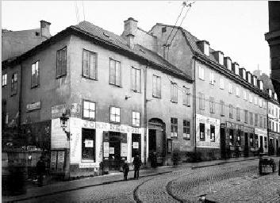

|
 3.Bröderna Harling 1907. Götgatan 11-13. Urvädersgränd, kv Urvädersklippan Större
|

Kvarteren Urvädersklippan Mindre och större inramas av Götgatan, Klevgränd och Hökens gata. Kvartersnamnen härstammar från 1650 och erinrar liksom namnet Urvädersgränd mellan de båda kvarteren om borgaren Simon Uhrwäder som var husägare i ett av kvarteren.
Se vidare bl a Urvädersgränd och Peter Myndes backe, Mariagränd, Klevgränd, Urvädersgränd, Hökens gata, Svartensgatan som alla mynnar i Götgatan här i nordvästra Katarina. |
I kvarteret Urvädersklippan mindre ligger vid Urvädersgränd 3 Bellmanshuset, där skalden bodde 1770-74 och där en stor del av hans epistlar tillkommit. Det ursprungliga huset som förstördes vid den stora branden 1723 uppfördes på nytt av hovslagaren Adam Wallman och blev om- och tillbyggt 1763. År 1938 förvärvades fastigheten av
Sällskapet Par Bricole, som restaurerade det i tidsenligt skick och där har sin hemvist. (Ur Hasselblad, Stockholmskvarter)
Wikipedia: Urvädersgränd är en gränd på Södermalm i Stockholm. Den börjar i nordvästra hörnet av Mosebacke torg och fortsätter i en båge mot väster tills den slutar i en trappa ner till Götgatan i höjd med Sankt Paulsgatan. Gatan och kvarteret Urvädersklippan är uppkallat efter borgaren Simon Uhrwäder som i mitten av 1600-talet ägde ett hus vid gatan. Han var ättling till den Nils Månsson Uhrwäder som 200 år tidigare gav namn åt Urvädersgränd i Gamla stan, numera Stenbastugränd. På Urvädersgränd 3, precis efter trappan till Götgatan, ligger Bellmanhuset uppkallat efter skalden Carl Michael Bellman som bodde här 1770–1774. Idag är Bellmans två rum på vindsvåningen tidstypiskt inredda och sköts av sällskapet Par Bricole som har regelbundna visningar för allmänheten.
På Urvädersgränd 9 hade konstnären Sven X:et Erixson sin bostad och ateljé 1931–1934. Utsikten över Slussen och Gamla stan har han förevigat i ett antal målningar. |


{kind=link}
{kind=link}